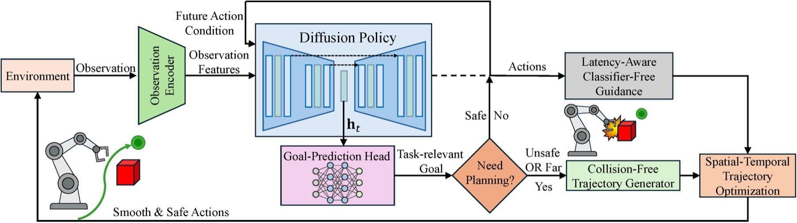
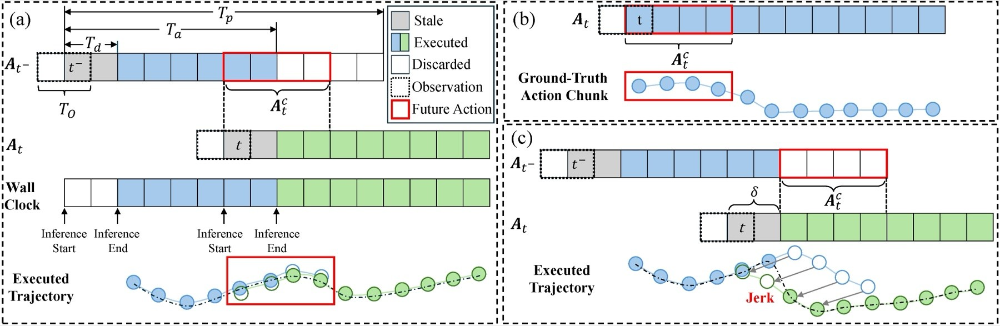
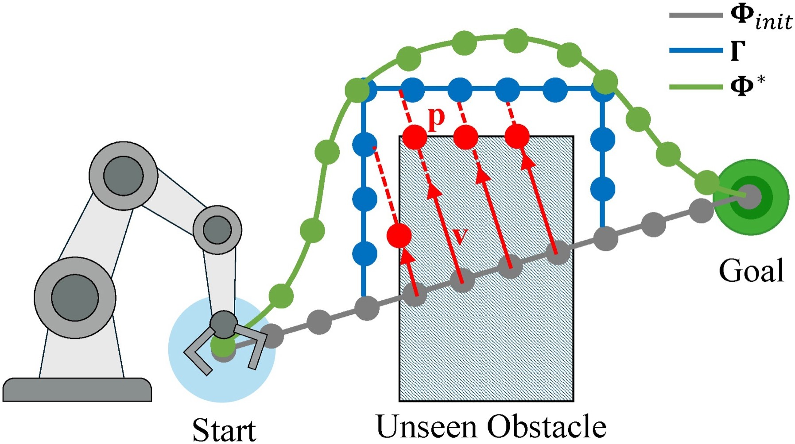
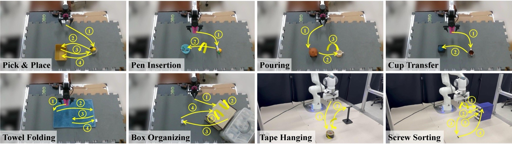
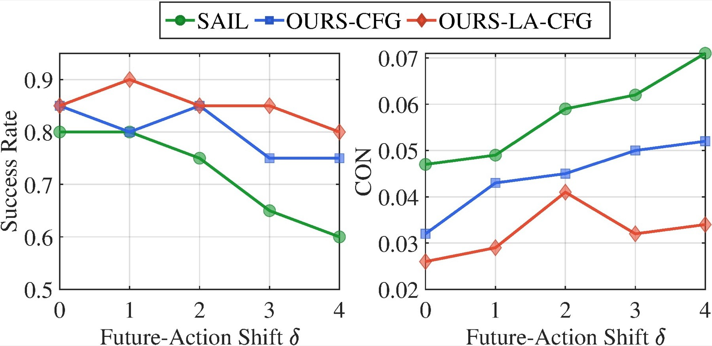
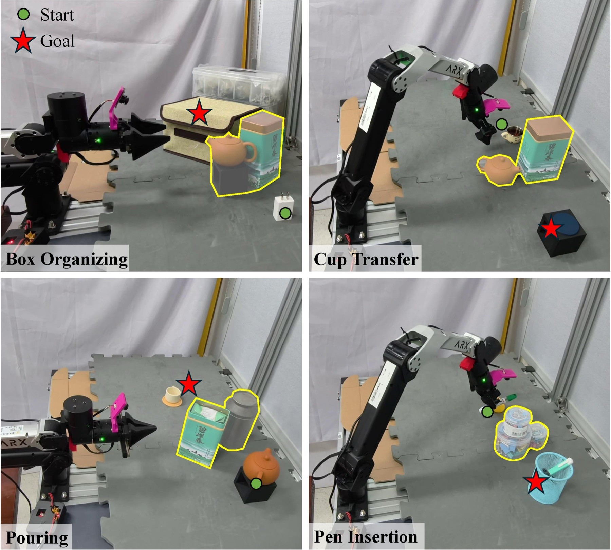
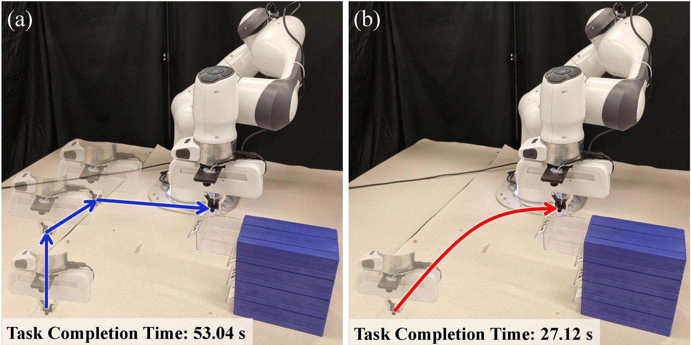

Video
Abstract
Diffusion-based visuomotor policies deployed with asynchronous inference often exhibit inter-chunk discontinuities and lack explicit mechanisms for obstacle-aware execution, leading to jerky motions and collisions that hinder reliable manipulation in real-world scenes. To address these issues, we propose LAGO Policy, a unified asynchronous action-generation framework that integrates trajectory optimization with diffusion policy for smooth and safe execution. LAGO Policy improves inter-chunk consistency via latency-aware classifier-free guidance conditioning on future actions. It further enables goal-directed collision-free trajectory planning by predicting a task-relevant interaction goal from demonstrations. Finally, spatial–temporal trajectory optimization refines the actions to be executed for low-jerk and feasible motion. Extensive real-world experiments demonstrate that LAGO Policy achieves smooth collision-free execution with high task success across challenging manipulation tasks.
Contributions
- A latency-aware CFG training scheme that decouples observation and future-action conditioning with randomized delay for smooth asynchronous execution.
- A goal-directed safe generation paradigm coupling demonstration-derived goal prediction with trajectory optimization for safe, smooth motion.
- Comprehensive real-world validation across eight challenging manipulation tasks.
Method

Each asynchronous cycle generates an action chunk and predicts a task-relevant goal; goal-conditioned trajectory generation is triggered when the path to the goal is obstructed or far, and all executed motions are refined by spatial–temporal optimization.
Latency-Aware Classifier-Free Guidance
We inject the future-action condition through CFG and randomize its temporal delay during training, making inter-chunk execution robust to latency-induced shifts at deployment.

Goal-Prediction Head
A goal-prediction head on the denoising U-Net bottleneck predicts a task-relevant interaction goal from demonstrations, guiding collision-free planning in cluttered scenes.
Collision-Free Trajectory Generation
A line-of-sight check toward the predicted goal triggers a spline-based optimizer (inspired by EGO-Planner) that produces a smooth collision-free end-effector trajectory without requiring a collision-free initialization.

Spatial-Temporal Trajectory Optimization
Executed actions are treated as keypoints and refined with MINCO-based spatial–temporal optimization for low-jerk, feasible motion.
Experiments
We design experiments to answer the following questions:
- Q1: Does latency-aware classifier-free guidance maintain inter-chunk consistency under temporally shifted future-action conditions?
- Q2: Does LAGO Policy produce smoother execution trajectories in real-world manipulation?
- Q3: Does goal-directed collision-free planning improve task completion in the presence of unseen obstacles?
Experiment Setup
We evaluate on two platforms — a 6-DoF ARX5 and a 7-DoF Franka arm — each with two external Intel RealSense RGB-D cameras and a wrist-mounted 180° fisheye camera, across eight real-world manipulation tasks. Performance is measured by success rate (SR), average time of successful rollouts (ATR), inter-chunk consistency (CON), and integrated squared jerk (ISJ).

Real-World Evaluation Results
| Method | Pick & Place | Pen Insertion | Pouring | Cup Transfer | ||||||||||||
|---|---|---|---|---|---|---|---|---|---|---|---|---|---|---|---|---|
| SR↑ | ATR↓ | CON↓ | ISJ↓ | SR↑ | ATR↓ | CON↓ | ISJ↓ | SR↑ | ATR↓ | CON↓ | ISJ↓ | SR↑ | ATR↓ | CON↓ | ISJ↓ | |
| DP | 0.85 | 16.91 | 0.034 | 27.29 | 0.70 | 8.76 | 0.0092 | 32.71 | 0.25 | 20.24 | 0.033 | 22.44 | 0.10 | 10.27 | 0.041 | 26.34 |
| Ours | 1.0 | 15.41 | 0.019 | 24.37 | 0.90 | 7.94 | 0.011 | 21.45 | 0.65 | 19.41 | 0.012 | 15.74 | 0.40 | 10.62 | 0.0083 | 10.11 |
| Method | Towel Folding | Box Organizing | Tape Hanging | Screw Sorting | ||||||||||||
|---|---|---|---|---|---|---|---|---|---|---|---|---|---|---|---|---|
| SR↑ | ATR↓ | CON↓ | ISJ↓ | SR↑ | ATR↓ | CON↓ | ISJ↓ | SR↑ | ATR↓ | CON↓ | ISJ↓ | SR↑ | ATR↓ | CON↓ | ISJ↓ | |
| DP | 0.35 | 18.24 | 0.058 | 33.11 | 0.60 | 28.13 | 0.072 | 96.10 | 0.80 | 32.82 | 0.0066 | 115.51 | 0.60 | 53.50 | 0.0062 | 116.67 |
| Ours | 0.70 | 14.27 | 0.017 | 15.25 | 0.85 | 27.31 | 0.026 | 29.07 | 0.90 | 36.80 | 0.0059 | 21.16 | 0.95 | 52.97 | 0.0037 | 18.77 |
Table 1: Real-World Evaluation. LAGO Policy achieves lower CON and ISJ on nearly all tasks, indicating improved inter-chunk continuity and smoother execution trajectories, while also improving success rates.
Robustness to Future-Action Condition Shifts (Q1)

Across increasing future-action shifts, Ours-LA-CFG (CFG injection with delay randomization) maintains higher SR and smaller CON change than SAIL and Ours-CFG, confirming improved robustness to temporal shifts.
Smooth Execution in Real-World Manipulation (Q2)
LAGO Policy achieves lower CON on seven tasks and lower ISJ on all eight, with steadier gripper commands that improve contact-rich tasks such as Towel Folding and Pouring.
Goal-Directed Obstacle Avoidance (Q3)

| Method | Box | Cup | Pouring | Pen |
|---|---|---|---|---|
| No-Avoid | 0.40 | 0.0 | 0.0 | 0.60 |
| Local | 0.60 | 0.20 | 0.40 | 0.80 |
| Goal-Directed | 1.0 | 0.80 | 0.80 | 1.0 |
Table 2: Success rate on four real-world tasks with unseen obstacles.
By planning a collision-free trajectory to the predicted goal before handing control back for the final interaction, Goal-Directed avoids reactive short-horizon failures and achieves the highest success under unseen obstacles.

Conclusion
LAGO Policy combines latency-aware CFG with goal-directed collision-free planning to deliver smooth, safe, and successful diffusion-based manipulation, validated on eight real-world tasks.
BibTeX
@article{shi2026lago,
title = {LAGO Policy: Latency-Aware Asynchronous Diffusion Policies with Goal-Directed Collision-Free Planning for Smooth Manipulation},
author = {Shi, Guowei and Xie, Xupeng and Luo, Yiming and Guo, Jian and Ma, Jun and Zhou, Boyu},
journal = {arXiv preprint arXiv:2606.17982},
year = {2026},
url = {https://lago-policy.github.io/}
}